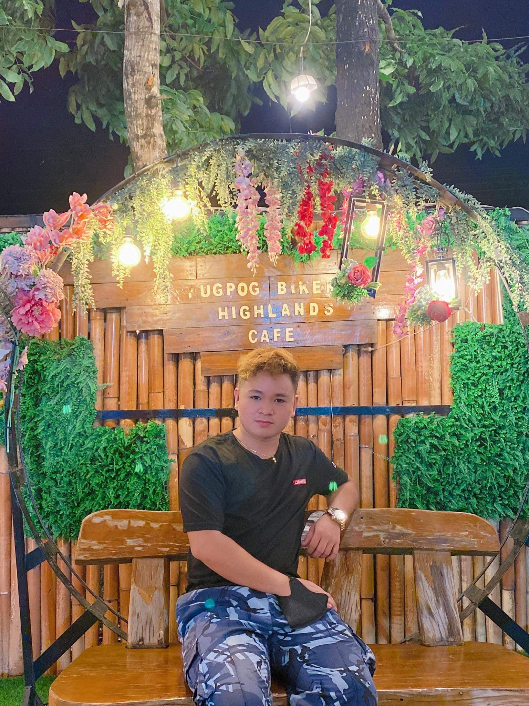

About
The person behind the product polish.
I build experiences that combine visual elegance, clear usability, and a strong emotional connection to the audience.

Who I Am
Joshua Bajao
I am a mobile app developer with a strong interest in premium interface design, product storytelling, and building experiences people genuinely want to use. I care about clarity, feeling, and detail, not just functionality.
My work centers on digital products that need both technical structure and emotional resonance. I enjoy turning early concepts into polished user experiences that feel intentional from the first screen to the last interaction.
Approach
How I build.
Design with atmosphere
I aim for interfaces that feel elevated, memorable, and premium instead of generic or template-driven.
Think like a product owner
I shape flows around the real user experience, feature hierarchy, and the value each screen should create.
Refine every interaction
From navigation to call-to-action buttons, I want each interaction to feel smooth, clickable, and intentional.
Vision
I want to create products that look beautiful and serve people well.
That is why projects like Can I Pray for You matter to me. The goal is not just to ship features. The goal is to create a digital space where connection, care, faith, and thoughtful design work together in one experience.